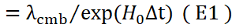
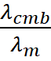

Decreasing Universe: O CMB e a
Idade do Universo
João Carlos Holland de
Barcellos, Universidade de São Paulo
Abstract: Utilizaremos a
Teoria do “Universo Decrescente” (‘Decreasing
Universe’ - D.U.) para
, a partir do comprimento de onda médio da radiação cósmica de fundo
(CMB) , fazer uma estimativa para a Idade do Universo.
Palavras Chaves: Decreasing Universe, CMB,
Universe Age, L-CDM
Introdução
O Modelo
atual para a origem e a expansão do universo, conhecido como modelo “L-CDM”,
propõe que o universo possui cerca de 13.8 bilhões de anos e, contudo, possui
um raio observável de cerca de 46 bilhões de anos luz. Isso parece contradizer
a Teoria da Relatividade que estabelece que nenhuma partícula pode viajar mais
rápido que a velocidade da luz. Este trecho
de artigo ilustra o problema:
“...First of
all, we should explain that the light-speed limit that relativity imposes on
objects within the universe doesn’t apply to the universe itself…” [07]
Se um objeto
(estrela ou galáxia) está se afastando de nós, eu pergunto: que
parte da teoria da relatividade diz que precisamos “descontar” a parte que o
afastamento do objeto se deve ao próprio espaço se afastando e que parte não?
Isso não existe na teoria da relatividade e mostra o primeiro enrosco deste antigo
modelo.
Outras
evidências parecem desafiar o modelo, se não, vejamos:
"...a new
study by professor Rajendra Gupta, of the Department of Physics at the
University of Ottawa has put the age of the universe at almost double what has
long been believed - 26.7 billion years old.." [08]
A estrela
mais antiga conhecida:
“...In 2000,
scientists looked to date what they thought was the oldest star in the
universe. They made observations via the European Space Agency's (ESA)
Hipparcos satellite and estimated that HD140283 — or Methuselah as it's
commonly known — was a staggering 16 billion years old....”[06]
Apesar
destes problemas, o modelo L-CDM ainda é a teoria mais aceita e produz
resultados satisfatórios em uma ampla gama de observações. Iremos tomar
emprestado parte deste modelo, relativamente ao início do universo, para (utilizando
o D.U.), recalcularmos
a idade do Universo.
O CMB e o Modelo L-CDM
Segundo o
atual modelo, chamado L-CDM (Lambda Cold Dark matter), A Radiação Cósmica de fundo (CMB-Cosmic Microwave Background) é a radiação térmica remanescente do universo primordial, emitida quando o cosmos
tinha cerca de 380.000
anos de idade. É
uma evidência de que houve um período na história do Universo em que os fótons
que surgiram se espalharam praticamente de maneira uniforme por todo o cosmo.
É observado
hoje como um banho
de micro-ondas quase
uniforme, com
temperatura de 2,725 K . Estima-se que,
no início, o universo era um
plasma opaco
de elétrons, prótons e fótons. À medida que o universo expandiu e esfriou até ~3000 K , os elétrons se combinaram com os prótons formando hidrogênio neutro ( recombinação ).
Nesse momento, os fótons pararam de interagir
com a matéria e passaram a viajar livremente. Esse momento é chamado de desacoplamento da
radiação.
Os fótons do
CMB vêm de um plasma
térmico em equilíbrio , com espectro de corpo negro . Os principais processos de geração de fótons nesse
estágio foram:
a) Double Compton (e⁻ + γ ↔ e⁻ + γ + γ) (plasma muito
quente) gerou cerca de
≈ 90 – 95 % dos fótons.
b) Bremsstrahlung “free–free” (e⁻ + p ↔ e⁻ + p + γ) gerou cerca de ≈ 5 – 10 % dos fótons.
Se esses
processos fossem feitos hoje, num laboratório, os comprimentos de onda desses
fótons, gerados agora, podem ser calculados:
O
processo é : e− + ⟶ e− + γ2 + γ3
E serve,
em um plasma quente, para criar fótons novos de baixa energia. A energia
média desses fótons depende, quase que unicamente, da temperatura do plasma
de elétrons onde o espalhamento ocorre.
Para
reproduzir a situação do Universo logo antes do desacoplamento (origem do CMB)
usaríamos T ≈ 3000 K.
Energia média do fóton produzido
No limite
“soft-photon” (a grande maioria dos eventos), a
energia típica do fóton recém-gerado é da ordem de:
⟨E⟩ ≈ kT = 8,617×10−5 eV K−1 × 3000 K ≈ 0,26 eV
Comprimento de onda correspondente
λa = hc/E = 4,8μm =>
λa≃5×10−6m
Comprimento de onda produzido por
“double Compton” em laboratório
Quando
elétrons livres desaceleram no campo de íons, emitem um contínuo de
fótons. Ao contrário do corpo-negro — o espectro cai exponencialmente já a
partir de hν ∼ kT. Isso significa que a maior
parte dos fótons tem energias iguais ou menores que kT
(=0,26eV) ). Assim
sendo teremos:
λb = hc/(KT) =>
λb≃4.8×10−6m
Comprimento de onda produzido por
“Bremsstrahlung” em laboratório
Se tomarmos
uma média ponderada do comprimento de
onda desses dois processos pela frequência dos fótons produzidos teremos:
λm = 95% λa + 5% λb
Portanto,
poderemos utilizar o seguinte comprimento de onda médio (se fosse criado em laboratório hoje) , que
simula os fótons originais produzidos, conhecidos como CMB:
λm ≃5×10−6m
Comprimento
de onda hoje dos processos que simulariam o CMB
O comprimento de onda
médio do CMB real foi medido [04] como sendo:
λcmb ≃1.44×10−3m
Measured wavelength of the CMB
Decreasing Universe (D.U.) e a Idade do Univeso
Através do modelo
do Universo Decrescente (D.U.)[01]
e do comprimento de onda médio da Radiação Cósmica de Fundo, e do comprimento dessa radiação
produzida em laboratório hoje(derivado acima),
poderemos estimar a idade do Universo por este novo modelo.
A Idéia é: Comparando os fótons produzidos em laboratório
atualmente, onde os átomos e tudo mais já estão bem encolhidos depois de
bilhões de anos submetidos ao campo gravitacional da galáxia, possamos compara-los
com os fótons originais do CMB e, assim, achar o tempo que levou para este nível
de contração que temos hoje.
Deveremos,
antes, contudo, tecer algumas considerações:
Algumas Considerações e Hipóteses
- No D.U. o
universo não está se expandindo de
forma acelerada. Isso implica que, revertendo o tempo, não teríamos,
necessariamente, tudo localizado em uma origem comum (razão do Big Bang).
- Contudo o
D.U. não nega que este caso possa ter ocorrido
e que o Big-Bang possa ter (ou não) acontecido.
-É possível, nesta teoria, portanto, que
o Universo ainda esteja se expandindo (mas não de forma acelerada) e que o Big-Bang possa ter acontecido.
-Vamos
supor, de qualquer modo, que houve uma época no Universo em que a matéria
estivesse presente, a nível de plasma, e que este antigo plasma originou o
atual CMB.
-Iremos
considerar, como uma hipótese extra, que esta época seria a época do ínicio aproximado do Universo.
A Fórmula Original
Devemos
Lembrar que no D.U. o campo gravitacional encolhe o espaço e tudo que ele
contiver em seu interior com uma taxa de contração que depende do campo
gravitacional que banha este espaço[03].
Dessa forma,
em nosso modelo, o comprimento de ondas do CMB original não é esticado pela expansão do espaço, como no modelo L-CDM, mas, é
a nossa própria contração que faz com que medimos esse comprimento como sendo
maior, com a ilusão de que ele foi
esticado, quando, na verdade, fomos nós
que encolhemos.
Na Nossa
Via-Láctea, na nossa localização terrestre, utilizando a fórmula da contração
devido ao campo gravitacional [01], poderemos relacionar os
comprimentos de onda λm e λcmb
:
λm 
Onde:
λm = Comprimento de onda produzido aqui (já contraído ≃5E-6m)
λcmb = Comprimento de onda original (pouca contração ≃ 1.44E-3)
H0 = Hubble Constant ( 2.2E-18 s-1 )
∆t = t – t0 (intervalo
de tempo para esta contração ≃Idade do Universo)
Assim,
podemos isolar Δt:
Δt = ln( 
Substituindo
os valores na equação acima obteremos:
Δt =82 bilhões de anos
Discussão
-Nosso
cálculo utilizou o tempo de contração num campo gravitacional como o nosso.
Claro que nossa galáxia levou algum tempo para sua formação e, portanto, não
havia, no início este campo gravitacional tão alto. Assim sendo, a idade do
Universo deve ser maior que o nosso
calculado (T > 82G anos).
-Importante
frisar que a teoria da relatividade nunca separou, no cálculo de um objeto que
se move, a parte da velocidade que se refere ao afastamento devido à “expansão
do espaço” e a parte da velocidade que se refere ao afastamento “real” do
objeto. De modo que, no modelo L-CDM, isto é uma flagrante “gambiarra” para
“explicar” o que não tem explicação, neste modelo galáxias se movendo em
velocidades acima da velocidade da luz é algo “normal”.
-O Início do
Universo, no modelo D.U. , não precisa necessariamente se iniciar com o Big Bang, ou com tudo concentrado em um ponto. O início está em
aberto e o “Nada Jocaxiano”[09] pode ser a chave desse
mistério.
Conclusão
Utilizando o
modelo “Decreasing Universe” com os dados do
comprimento de onda do CMB adicionada as hipóteses que o universo se iniciou
muito próximo da época que ele emitia fótons de um plasma de cerca de 3000K
estimamos que o Universo possui pelo
menos 82 bilhões de anos.
References
[01] Derivation of Hubble’s Law and its relation to
dark energy https://medcraveonline.com/OAJMTP/OAJMTP-02-00049.pdf
[02] Decreasing
universe: the distance as a function of redshift
https://medcraveonline.com/AAOAJ/decreasing-universe-the-distance-as-a-function-of-redshift.html
[03] Decreasing
Universe: The 'Dark Matter' Effect
https://www.wecmelive.com/open-access/decreasing-universe-the-dark-matter-effect.pdf
[04] Nine-Year Wilkinson Microwave Anisotropy Probe (WMAP) Observations:
Final Maps and Results
https://lambda.gsfc.nasa.gov/product/foreground/fg_images/f10foreground_1panel/wmap_9yr_basic_results.pdf
[05] O
telescópio Webb observou quasares onde não deveriam estar
https://www.terra.com.br/byte/o-telescopio-webb-observou-quasares-onde-nao-deveriam-estar-algo-esta-errado-com-a-teoria-dos-buracos-negros,387e00179c9fce17759c13695491b91c44ycke5x.html
[06] Methuselah (HD140283): The oldest star in the
universe
https://www.space.com/how-can-a-star-be-older-than-the-universe.html
[07] How can the visible universe be 46 billion light-years
in radius when the universe is only 13.8 billion years old?
https://www.astronomy.com/science/size-of-the-universe/
[08] The age of the Universe might be drastically
wrong
https://www.bbc.com/reel/video/p0g1v4pq/the-age-of-the-universe-might-be-drastically-wrong
[09] Jocaxian
Nothingness
https://medcraveonline.com/AAOAJ/the-jocaxianrsquos-nothingness.html